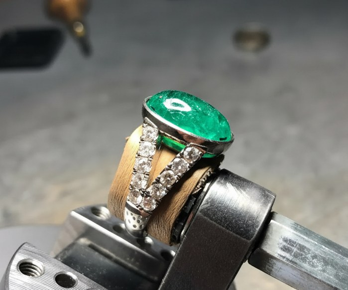
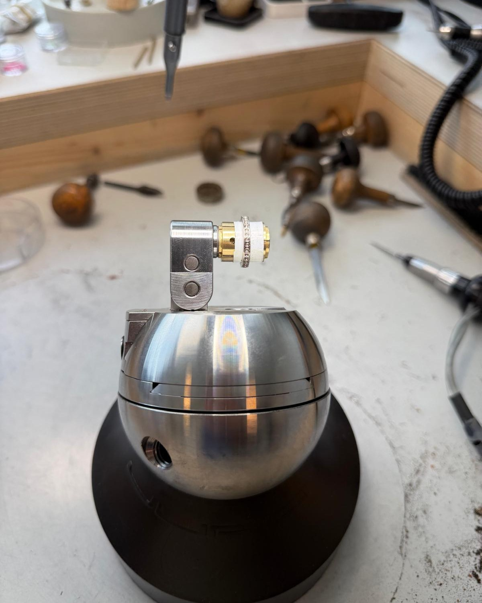
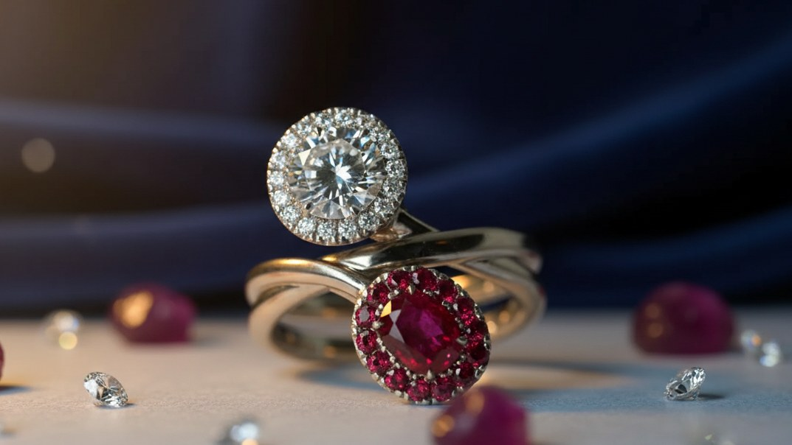
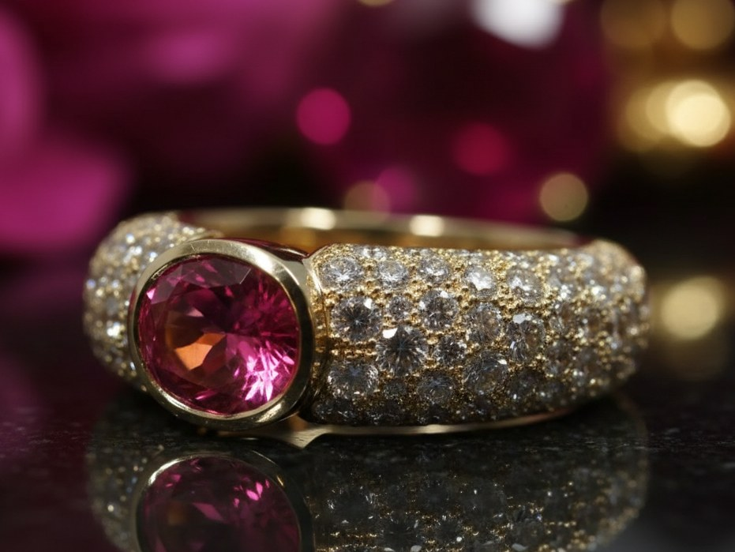
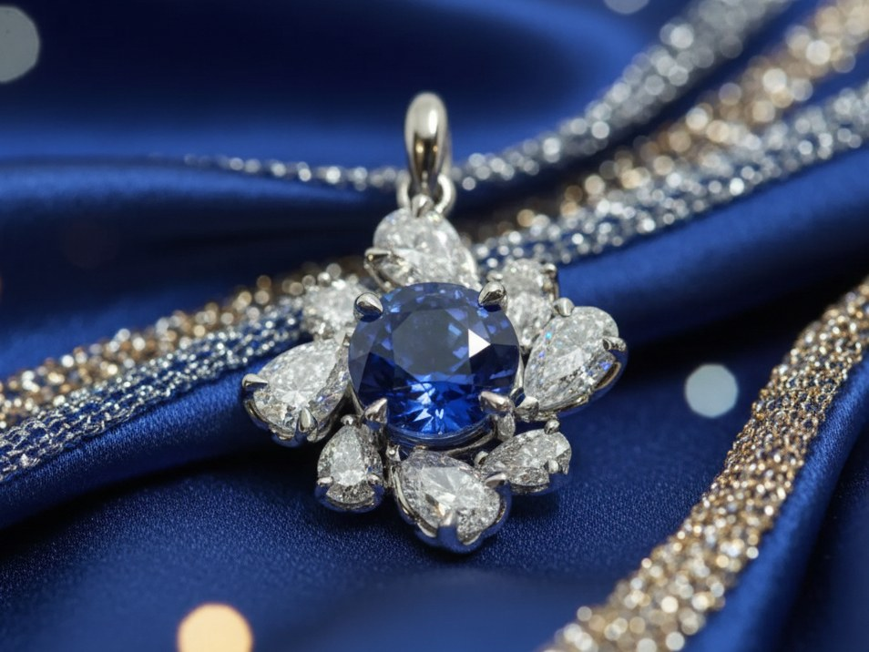
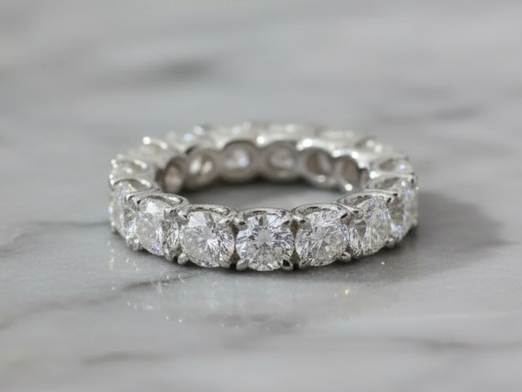
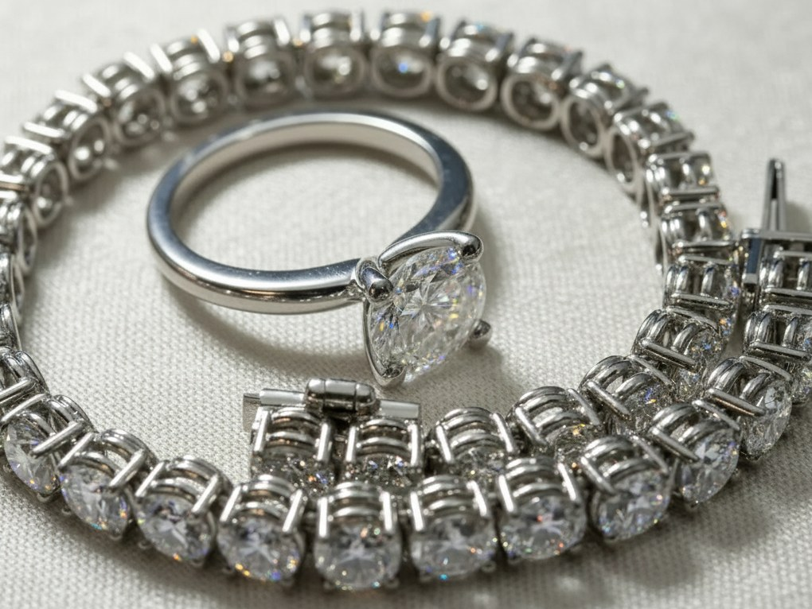

Hochpräzise Steinfassung für Luxus-Schmuckhäuser.
Pavé, Krappen, Kanal, Zargen und Carré mit Schweizer Präzision. Aus unserer Werkstatt in Sempach, für Schmuckhersteller weltweit.
- Sempach, Schweiz
- seit 2006
- Weltweit
- Vertraulich

Präzision trifft auf Meisterhandwerk.
Stone Art Precision ist spezialisiert auf professionelle Steinfassung für Luxus-Schmuckhersteller weltweit.
Wir liefern fehlerfreie Pavé-, Krappen-, Kanal- und Zargenfassungen mit Schweizer Präzision.
- Seit
- 2006
- Angebot
- 24–48 h
- Für
- weltweit
Sechs Fassarten, im Schnitt gezeichnet.
Jede Fassung hält den Stein anders. Die Zeichnungen zeigen, wo Metall auf Stein trifft.
-
Draufsicht Pavé-Fassung
Feine Mikro-Pavé-Arbeit: nahtlose, funkelnde Flächen mit präzise platzierten Steinen.
-
Querschnitt Krappenfassung
Klassische, sichere Vier- oder Sechs-Krappenfassungen, die Lichteinfall und Sichtbarkeit des Steins maximieren.
-
Querschnitt Kanalfassung
Anspruchsvolle Kanalarbeiten für exakt ausgerichtete Steinreihen mit glatten, polierten Kanten.
-
Querschnitt Zargenfassung
Zeitgenössische Zargenfassungen: maximaler Schutz, und die Schönheit des Steins bleibt sichtbar.
-
Draufsicht Carré-Fassung
Quadratisch und dreieckig geschnittene Steinsitze mit mehreren Körnern.
-
Nach Mass Massarbeit
Spezielle Fassungstechniken, angepasst an einzigartige Designs und anspruchsvolle Spezifikationen.
Von einfach bis komplex.
Wir fassen Steine in allen Komplexitätsstufen. Haben Sie eine einzigartige Fassungsaufgabe? Kein Projekt ist zu kompliziert.
Einfach
Einfache Fassungen
Einzelsteinfassungen und einfache Fassungen, mit Präzision ausgeführt.
Mittel
Mehrsteinfassungen
Mehrsteinfassungen, die erweiterte Techniken erfordern.
Komplex
Komplexe Designs
Komplexe Muster und herausfordernde Spezifikationen, mit Erfahrung gemeistert.
Warum Stone Art Precision.
-
i
Fehlerfreie Ausführung
Sorgfältige Liebe zum Detail bei jeder Steinfassung.
-
ii
Vertraulichkeit
Alle Kundenarbeiten werden streng vertraulich behandelt.
-
iii
Qualitätskontrolle
Ein strenger Inspektionsprozess stellt sicher, dass jeder Stein nach höchsten Standards gefasst ist.
-
iv
Zuverlässiger Partner
Konstante Qualität und pünktliche Lieferung für Ihr Geschäft.
Ein reibungsloser Prozess.
Beratung
Teilen Sie uns Projektdetails, Spezifikationen und Zeitrahmen mit.
Angebot & Planung
Detaillierte Preise und Projektzeitplan innerhalb von 24–48 Stunden.
Ausführung
Fachkundige Handwerkskunst, mit Präzision und Sorgfalt auf Ihre Stücke angewendet.
Qualitätsprüfung
Strenge Inspektion: Jedes Detail muss unseren hohen Standards entsprechen.
Lieferung
Sichere Verpackung und prompte Lieferung an Ihren Standort.

Eine Werkstatt, ein Handwerk.
Schweizer Steinfassung für Luxus-Schmuckhäuser weltweit, seit 2006. Unsere Werkstatt liegt in Sempach Station.
Wir kombinieren fortschrittliche Werkzeuge mit traditionellen Techniken.
- Ort
- Eichweid 1, 6203 Sempach Station
- Seit
- 2006
Präzision in jedem Detail.
Portfolio-Bilder zeigen die Qualität unserer Handwerkskunst. Alle Kundenarbeiten werden streng vertraulich behandelt.





Starten Sie Ihr Projekt.
Teilen Sie uns Projektdetails, Spezifikationen und Zeitrahmen mit. Detaillierte Preise erhalten Sie innerhalb von 24–48 Stunden.
- Telefon+41 78 839 73 23
- E-Mailinfo@stoneartprecision.com
- WerkstattEichweid 1, 6203 Sempach Station